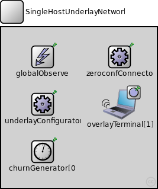
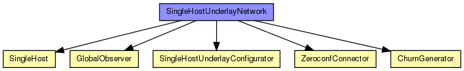
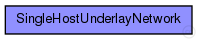

This documentation is released under the Creative Commons license
This documentation is released under the Creative Commons licenseThe SingleHostUnderlay ned-file
See also: SingleHostUnderlayConfigurator
The following diagram shows usage relationships between types. Unresolved types are missing from the diagram. Click here to see the full picture.
The following diagram shows inheritance relationships for this type. Unresolved types are missing from the diagram. Click here to see the full picture.
| Name | Value | Description |
|---|---|---|
| isNetwork |
| Name | Type | Default value | Description |
|---|---|---|---|
| underlayConfigurator.terminalTypes | string |
list of terminal types |
|
| underlayConfigurator.churnGeneratorTypes | string |
a list of churn generators to be used |
|
| underlayConfigurator.transitionTime | double |
time to wait before measuring after init phase is finished |
|
| underlayConfigurator.measurementTime | double |
duration of the simulation after init and transition phase |
|
| underlayConfigurator.gracefulLeaveDelay | double |
time between prekill and removal from overlay |
|
| underlayConfigurator.gracefulLeaveProbability | double |
probability of gracefull leave |
|
| underlayConfigurator.nodeIP | string |
IP of the node |
|
| underlayConfigurator.nodeInterface | string |
interface name |
|
| underlayConfigurator.stunServer | string |
name of a STUN server (optional) |
|
| underlayConfigurator.bootstrapIP | string |
IP of an overlay node for bootstrapping |
|
| underlayConfigurator.bootstrapPort | int |
Port of the bootstrap node |
|
| churnGenerator.targetOverlayTerminalNum | int |
number of nodes after init phase |
|
| churnGenerator.initPhaseCreationInterval | double |
node creation interval in init phase |
|
| churnGenerator.noChurnThreshold | double |
if the lifetimeMean of a specific churn generator exceeds this, NoChurn is used instead |
|
| churnGenerator.channelTypes | string |
used (tx) access technologies (from common/channels.ned) |
|
| churnGenerator.channelTypesRx | string |
used (rx) access technologies (from common/channels.ned) |
|
| overlayTerminal.networkLayer.ip.procDelay | double | 0s | |
| overlayTerminal.networkLayer.arp.retryTimeout | double | 1s |
number seconds ARP waits between retries to resolve an IP address |
| overlayTerminal.networkLayer.arp.retryCount | int | 3 |
number of times ARP will attempt to resolve an IP address |
| overlayTerminal.networkLayer.arp.cacheTimeout | double | 120s |
number seconds unused entries in the cache will time out |
| overlayTerminal.outDev.mtu | int |
maximum transmission unit of the underlaying network |
|
| overlayTerminal.neighborCache.rpcUdpTimeout | double |
default timeout value for direct RPCs |
|
| overlayTerminal.neighborCache.rpcKeyTimeout | double |
default timeout value for routed RPCs |
|
| overlayTerminal.neighborCache.optimizeTimeouts | bool |
calculate timeouts from measured RTTs and network coordinates |
|
| overlayTerminal.neighborCache.rpcExponentialBackoff | bool |
if true, doubles the timeout for every retransmission |
|
| overlayTerminal.neighborCache.debugOutput | bool |
enable debug output |
|
| overlayTerminal.neighborCache.enableNeighborCache | bool |
use neighbor cache for reducing ping traffic? |
|
| overlayTerminal.neighborCache.rttExpirationTime | double |
expiration of the validity of the measured rtts |
|
| overlayTerminal.neighborCache.maxSize | double |
maximum size of the cache |
|
| overlayTerminal.neighborCache.rttHistory | int | ||
| overlayTerminal.neighborCache.timeoutAccuracyLimit | double | ||
| overlayTerminal.neighborCache.defaultQueryType | string | ||
| overlayTerminal.neighborCache.defaultQueryTypeI | string | ||
| overlayTerminal.neighborCache.defaultQueryTypeQ | string | ||
| overlayTerminal.neighborCache.doDiscovery | bool | ||
| overlayTerminal.neighborCache.ncsType | string | ||
| overlayTerminal.neighborCache.ncsSendBackOwnCoords | bool | ||
| overlayTerminal.neighborCache.gnpDimensions | int |
gnp settings |
|
| overlayTerminal.neighborCache.gnpCoordCalcRuns | int | ||
| overlayTerminal.neighborCache.gnpLandmarkTimeout | double | ||
| overlayTerminal.neighborCache.npsMaxLayer | int |
nps settings |
|
| overlayTerminal.neighborCache.vivaldiShowPosition | bool |
vivaldi settings |
|
| overlayTerminal.neighborCache.vivaldiErrorConst | double | ||
| overlayTerminal.neighborCache.vivaldiCoordConst | double | ||
| overlayTerminal.neighborCache.vivaldiDimConst | double | ||
| overlayTerminal.neighborCache.vivaldiEnableHeightVector | bool | ||
| overlayTerminal.neighborCache.svivaldiLossConst | double |
svivaldi settings |
|
| overlayTerminal.neighborCache.svivaldiLossResetLimit | double | ||
| overlayTerminal.neighborCache.simpleNcsDelayFaultType | string |
simpleNcs settings |
|
| overlayTerminal.bootstrapList.rpcUdpTimeout | double |
default timeout value for direct RPCs |
|
| overlayTerminal.bootstrapList.rpcKeyTimeout | double |
default timeout value for routed RPCs |
|
| overlayTerminal.bootstrapList.optimizeTimeouts | bool |
calculate timeouts from measured RTTs and network coordinates |
|
| overlayTerminal.bootstrapList.rpcExponentialBackoff | bool |
if true, doubles the timeout for every retransmission |
|
| overlayTerminal.bootstrapList.debugOutput | bool |
enable debug output |
|
| overlayTerminal.bootstrapList.mergeOverlayPartitions | bool |
if true, detect and merge overlay partitions |
|
| overlayTerminal.bootstrapList.maintainList | bool |
maintain a list of bootstrap candidates and check them periodically |
|
| overlayTerminal.cryptoModule.keyFile | string |
the name of the file containing the public key pair used to sign messages |
|
| zeroconfConnector.enableZeroconf | bool |
if true, get bootstrap nodes via Zeroconf |
|
| zeroconfConnector.serviceType | string |
Zeroconf service type |
|
| zeroconfConnector.serviceName | string |
Zeroconf service name |
|
| zeroconfConnector.overlayType | string |
Zeroconf overlay type |
|
| zeroconfConnector.overlayName | string |
Zeroconf overlay name |
|
| globalObserver.globalNodeList.maliciousNodeProbability | double |
probability for a node to be malicious on creation |
|
| globalObserver.globalNodeList.maliciousNodeChange | bool |
dynamically change number of malicious nodes |
|
| globalObserver.globalNodeList.maliciousNodeChangeStartTime | double |
simTime at which nodes begin to become malicious |
|
| globalObserver.globalNodeList.maliciousNodeChangeRate | double |
number of nodes to change to malicious compared to all nodes |
|
| globalObserver.globalNodeList.maliciousNodeChangeInterval | double |
time between two node changes to malicious |
|
| globalObserver.globalNodeList.maliciousNodeChangeStartValue | double |
minimum amount of malicious nodes in the peerSet |
|
| globalObserver.globalNodeList.maliciousNodeChangeStopValue | double |
maximum amount of malicious nodes in the peerSet |
|
| globalObserver.globalNodeList.maxNumberOfKeys | int |
maximum number of overlay keys the bootstrap oracle handles |
|
| globalObserver.globalNodeList.keyProbability | double |
probability of keys to be owned by nodes |
|
| globalObserver.globalParameters.rpcUdpTimeout | double |
default timeout value for direct RPCs |
|
| globalObserver.globalParameters.rpcKeyTimeout | double |
default timeout value for routed RPCs |
|
| globalObserver.globalParameters.printStateToStdOut | bool |
print overlay ready messages to std::cout |
|
| globalObserver.globalParameters.topologyAdaptation | bool |
turn on topologyAdaptation (for demonstrator) |
|
| globalObserver.globalTraceManager.traceFile | string |
file name of the trace file |
|
| globalObserver.globalStatistics.outputMinMax | bool |
enable output of minimum and maximum for scalars |
|
| globalObserver.globalStatistics.outputStdDev | bool |
enable output of standard deviation for scalars |
|
| globalObserver.globalStatistics.measureNetwInitPhase | bool |
fetch statistics in init phase? |
|
| globalObserver.globalStatistics.globalStatTimerInterval | double |
interval length of periodic statistic timer |
// // The SingleHostUnderlay ned-file @see SingleHostUnderlayConfigurator // network SingleHostUnderlayNetwork { submodules: underlayConfigurator: SingleHostUnderlayConfigurator { @display("p=70,130"); } churnGenerator[0]: ChurnGenerator { @display("p=70,210,column"); } overlayTerminal[1]: SingleHost { @display("p=200,130"); } zeroconfConnector: ZeroconfConnector { @display("p=200,50"); } globalObserver: GlobalObserver { @display("p=70,50"); } }
This documentation is released under the Creative Commons license